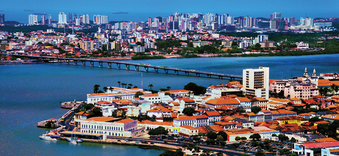

Cidade: São Luís.
População: 1.110.000 habitantes aproximadamente.
A gente até vê isso na escola, mas lembrar que é bom… A ilha onde fica localizada a cidade de São Luís é a Ilha de Upaon-Açu. Além de São Luís, fazem parte da ilha mais 3 municípios: Raposa, São José de Ribamar e Paço do Lumiar. Para sair da cidade por terra, a única forma é através de uma ponte no Km25 da BR135. Fora isso, somente de avião, barco ou ferry boat.
Essa é a curiosidade sobre São Luís que mais deixa deixa os turistas impressionados e confusos quando visitam o Maranhão! A cada (quase) 12h um ciclo de maré ocorre em São Luís. A variação média é entre 5 e 6 metros. Isso é muito. Para você ter uma noção, em João Pessoa a maré varia cerca de 2 metros. Além disso, São Luís é um dos poucos lugares no Brasil em que é permitido andar de carro na areia da praia (Praia do Meio e Araçagy). Como a maré varia, a areia está sempre úmida e facilita a passagem dos carros.
A cidade ganhou esse título na década de 80, quando o ritmo se popularizou na cidade. Hoje, grande parte da população curte o ritmo e existem várias casas especializadas na cidade. Umas bem populares, outras mais elitizadas. Se você quer vivenciar essa cultura do reggae em São Luís, o mais tradicional é o Bar do Nelson (na avenida Litorânea ou na filial do centro histórico). Uma das curiosidades é que o reggae de São Luís é na verdade internacional.
São Luís tem uma culinária bem típica, que muitas vezes difere da tradicional nordestina. Se você quer experimentar pratos típicos de São Luís, não deixe de tentar o cuxá (puro ou misturado com arroz), purê de macaxeira (mandioca/aipim), peixe escabeche, peixada maranhense, caranguejo “toc toc” ao leite de coco, torta de caranguejo ou camarão seco. Ah! E tudo estará sempre com muito cheiro verde (cebolinha, salsinha e, principalmente, coentro). Para acompanhar, um Guaraná Jesus (o sonho cor-de-rosa) ou um suco de bacuri ou cupuaçu. De sobremesa, peça um creme também de bacuri/cupuaçu ou um bombom (aqui chamado trufa) com os mesmos sabores. A noite, cai bem um cachorro quente maranhense – pão, salsicha, carne moída, salada, batata. Cachorro quente aqui não é cachorro quente se não tiver carne moída. A melhor pedida é o cachorro quente do Sousa, que está desde 1990 no estacionamento do Centro Histórico.
Eu não quero dizer que São Luís deva entrar na briga pelo título de maior ou melhor São João do mundo. O que tenho a dizer é que, sem dúvida nenhuma, é uma experiência bem singular. Eu até fiz um outro post, contando porque eu considero São Luís um dos três principais destinos para se curtir o São João no Brasil. Aqui, a coisa não é somente turística. A população costuma curtir muito a festa e acompanha os shows com muita energia. Tem gente que se torna tão fã dos grupos, que os acompanha nas apresentações pela cidade. Grande parte da população espera ansiosamente por essa época do ano.
O Centro Histórico de São Luís, patrimônio mundial da humanidade tombada pela UNESCO em 1997, é considerado também um museu a céu aberto. Já foram identificados mais de 312 tipos diferentes de ladrilhos e azulejos oriundos principalmente de Portugal, França e Holanda. No total são em torno de 430 casarões e prédios possuem a fachada azulejada.